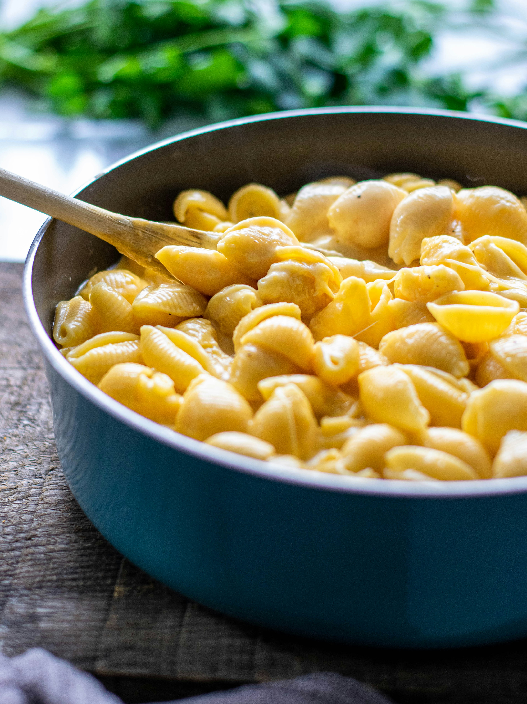

Mac and Cheese
Back to Home Page

Description:
This crockpot mac and cheese is creamy, comforting, and takes just moments to assemble in a slow cooker. Great for large family gatherings and to take to potluck dinners. It's always a big hit!
“This is an outstanding staple recipe,” raves Michelle Allen. “It's the closest consistency and flavor to my mother-in-law's legendary homemade mac n cheese. I make it often for large gatherings and get requests for the recipe all the time.”
“Very easy recipe,” says one Allrecipes community member. “I can’t find the cheese soup in my area so I used a small block of Velveeta. Really creamy and tasty comfort food.”
“Every time I make this for a party I get rave reviews and it is all gone even with a double batch (two crockpots)" says Kelly. "I love that you can make it and forget it and go about your day. I never cook the pasta first, I also put it into the crockpot dry. My family likes their mac and cheese dryer rather than soupy. Anyway that is the only change I make. It comes out great!"
Ingredients:
-
Macaroni: This classic mac and cheese recipe starts with a package of elbow macaroni.
-
Butter: A stick of butter lends richness and flavor.
-
Seasonings: Simply season the macaroni and cheese with salt and pepper.
-
Cheese: You'll need shredded Cheddar cheese for this basic recipe.
-
Milk products: The creamy cheese sauce calls for whole milk and evaporated milk.
-
Eggs: Up the richness with two beaten eggs.
-
Canned soup: A can of condensed Cheddar cheese soup is the budget-friendly secret ingredient:
-
Paprika: Ground paprika is optional, but recommended for fans of flavor!
Steps:
-
Boil the pasta in salted water, then drain and transfer to the slow cooker.
-
Stir in the butter, seasonings, and about half of the Cheddar.
-
Whisk the evaporated milk and eggs together, then stir into the pasta.
-
Whisk the milk and the soup together, then stir into the pasta.
-
Sprinkle the remaining cheese over the pasta mixture and garnish with paprika.
-
Cook on Low for 2 ½ to 3 hours.